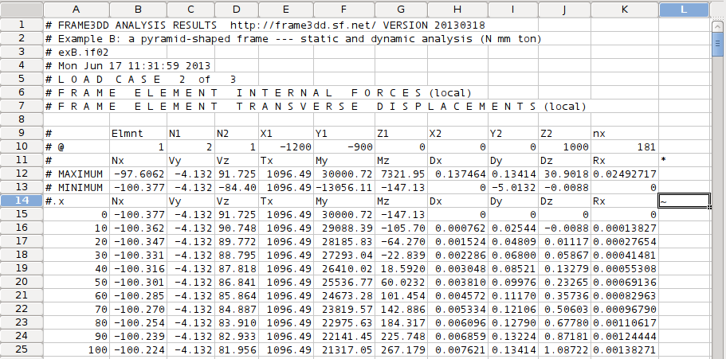
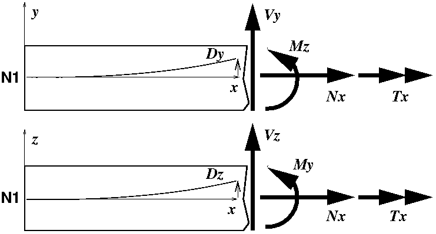

User manual and reference for Frame3DD: A Structural Frame Analysis Program
User manual and reference for Frame3DD: A Structural Frame Analysis Program
Department of Civil and Environmental Engineering
Edmund T. Pratt School of Engineering
Duke University - Box 90287,
Durham,
NC 27708-0287
Henri P. Gavin, P.E., Ph.D.,
FRAME3DD
Frame3DD is a program for the static and dynamic structural analysis of two- and three-dimensional frames and trusses with elastic and geometric stiffness.
Frame3DD is preferably executed from the
command prompt (Windows)
or shell (Linux), terminal (OS X),
or xterm (Linux or OS X) as follows, with filenames changed as required:
frame3dd inputfile.3dd outputfile.txt
Frame3DD reads a plain-text Input Data file, containing node coordinates, frame element geometry, material moduli, fixed nodes, prescribed displacements, load information, and optionally, mass information if a modal analysis is to be carried out.
Frame3DD appends results to a plain-text Output Data file.
Results from the most recent analysis
are appended to the end of the Output Data file.
Each section of the Output Data gives the date and time of the analysis,
recapitulates the input information, gives node displacements in global coordinates, frame element end-forces in local coordinates, reactions in global coordinates, and natural frequencies and mode shapes in global coordinates.
Frame3DD writes a
Gnuplot
script file used for viewing deformed frames and dynamic mode shapes.
If the Output Data is written to a file called MyResultsA.out,
the Gnuplot script is written to a file called MyResultsA.plt.
Graphical output may be viewed by starting Gnuplot and typing:
load 'MyResultsA.plt'.
Frame3DD can consider multiple static load cases in a single analysis.
Separate output data files list the internal axial force, shear forces, torsion, and bending moments along each frame element for each static load case.
Frame3DD may optionally interface with Matlab and with spreadsheet programs.
Frame3DD is free open-source software; you may redistribute it and/or modify it under
the terms of the GNU General Public License (GPL) as published by the
Free Software Foundation.
The software is distributed in the hope that it will be useful, but without any warranty; without even the implied warranty of merchantability or fitness for a particular purpose. See LICENSE.txt for details.
Frame3DD is developed using the free-and-open
vim text editor and the
gcc compiler.
Frame3DD had a free Sketchup interface available
here.
If you find Frame3DD to be useful please consider
a donation to the vim charity,
iccf-holland, which provides education
and health-care to needy children in Uganda.
Contents
- Getting started
- Input Data and Output Data
- How to install and run Frame3DD
- Linux
- Mac OS X
- Windows
- Matlab Interface
- Spreadsheet Interface
- FrameEd
- Structural Modeling
- Numerical Details
- Input Data Format
- Variable Definitions
- Command-line options
- Source code
- Exit code index
- Enhancements projected for future versions
- Acknowledgments
- References
1. Getting started
- Read the User Manual and Reference (this file).
-
Download Frame3DD and save the Frame3DD folder to your Desktop (more details below).
- Optionally, obtain a copy of Gnuplot for your operating system (more details below).
- Open a terminal window, go to the Frame3DD directory, and run the program on one of the examples using a command like ...
cd ~/Desktop/Frame3DD
frame3dd examples/exE.3dd examples/exE.out
- Open the Output Data file using a good text editor and view the Output Data.
- Plot the structural configuration, the deformed structural shape, and mode-shapes, by starting Gnuplot, and typing
gnuplot> cd 'Desktop/Frame3DD/examples'
gnuplot> load 'exE.plt'
Observe a series of plots by hitting the Return (or Enter) key between plots.
If a dynamic analysis was performed, you will enjoy an animation of selected mode shapes.
Continue to hit the Return (or Enter) key until the last plot is displayed.
2. Input Data and Output Data
The Input Data file is a plain text file and must adhere to the format
described below.
Several examples are given at http://frame3dd.sourceforge.net/. When writing your own Input Data files, note the following points:
- Comments may be placed anywhere in the file and are helpful in organizing the Input Data.
A comment begins with one of the following four characters # % ? ; and continues to the end of the line.
- All commas in the Input Data are ignored.
- Floating point numbers must be entered as 1.234 1234 or 1.234e3.
- Arithmetic expressions such as 1.234*10^3 or 6*sin(pi/2) are not allowed
in the Input Data (unless the Matlab interface is used).
To write your own Input Data file, it may be helpful to start with an example that resembles the system you would like to analyze. Carefully compare the graphical output of the example, the Input Data file, the Output Data file,
and the Input Data format, with the variable definitions at the end of this page.
You may edit Input Data files using a good text editor
(vim/evim/gvim,
gedit,
jEdit,
nano,
NotePad++ (Windows),
etc.),
using the Matlab interface, or using spreadsheet programs
(GoogleDocs,
LibreOffice,
Gnumeric, or Excel).
Details regarding the Matlab interface to Frame3DD are here.
Details regarding the spreadsheet interface to Frame3DD are here.
It might take a few tries to get your Input Data just right.
Frame3DD checks the Input Data for errors and, where possible,
displays descriptive diagnostic messages when errors are found.
Frame3DD generates several additional output files used in plotting deformed frames.
By default, these output files are sent to a temporary file folder.
On OS X, Linux, and Unix, the location of this folder defaults to the /tmp directory.
On Windows, the location of this folder defaults to C:\WINDOWS\Temp.
If you would like your output files to be sent to another location, you can set the environment variable FRAME3DD_OUTDIR with the path to your
desired temporary output directory (instructions below).
The additional output files will then appear in the folder you have specified.
3. How to install and run Frame3DD
Compiled executable programs are updated with some regularity.
Frame3DD installation packages are available for download for Linux,
for OS X, and for Windows operating systems as .ZIP archives.
These installation .ZIP archives include:
- A copy of the GPL license (LICENSE.txt)
- The executable program (frame3dd) for the selected operating system (Linux, OS X, or Windows)
- This manual, (doc/user-manual.html)
- Some general information (README.txt)
- Some Windows-specific issues (README-win32.txt)
- The Matlab interface code (matlab/)
- A summary of recent updates to the program (ChangeLog.txt)
- A set of example Input Data files (examples/)
A separate Windows installer includes a Microstran viewer module for Frame3DD.
The date stamp at the beginning of the manual corresponds to the release date of the code.
3.1 Linux
For Linux you may install Frame3DD from a .ZIP archive
or you may compile for Linux or Unix from the source code.
The following instructions install Frame3DD to the Desktop but other directories may be substituted, if so desired.
3.1.1 Installing Frame3DD from the .ZIP archive for Linux
-
Download the Frame3DD .ZIP archive (Frame3DD_VERSION_linux.zip) and save it in your Desktop.
If the .ZIP archive was not automatically unzipped,
double-click the icon to extract it to your Desktop.
-
Recommended
Put the Frame3DD directory in your path and set the FRAME3DD_OUTDIR location.
To do this, double-click the Home icon on the Desktop, and select View > Show Hidden Files
- If you have a file called .bashrc in your home directory,
open it with a double-click.
Copy-and-paste the following ten lines into the beginning of .bashrc
# for Frame3DD ... http://frame3dd.sourceforge.net/
# add Frame3DD executable directory to the path
export PATH=$PATH:$HOME/Desktop/Frame3DD/
# create a Frame3DD output directory
if [ ! -d /tmp/frame3dd_temp_$USER ]; then
mkdir /tmp/frame3dd_temp_$USER
echo "creating /tmp/frame3dd_temp_$USER for Frame3DD"
fi
# specify the Frame3DD output directory
export FRAME3DD_OUTDIR=/tmp/frame3dd_temp_$USER
... save, and exit the editor.
- If you have a file named .cshrc in your home directory,
open it with a double-click.
Copy-and-paste the following ten lines into the beginning of .cshrc
# for Frame3DD ... http://frame3dd.sourceforge.net/
# add Frame3DD executable directory to the path
set path = ( $path $home/Desktop/Frame3DD )
# create a Frame3DD output directory
if ( ! -d /tmp/frame3dd_temp_$user ) then
mkdir /tmp/frame3dd_temp_$user
echo "creating /tmp/frame3dd_temp_$user for Frame3DD"
endif
# specify the Frame3DD output directory
setenv FRAME3DD_OUTDIR /tmp/frame3dd_temp_$user
... save, and exit the editor.
.
- Open a Terminal window. (Right-click on an open part of the Desktop and select Open Terminal), and type:
source ~/.bashrc # if you edited ~/.bashrc
source ~/.cshrc # if you edited ~/.cshrc
3.1.2 Running Frame3DD in Linux
- Open a Terminal window. (Right-click on an open part of the Desktop and select Open Terminal.)
Change to the directory containing the Frame3DD example files and run an example, as follows.
cd ~/Desktop/Frame3DD
frame3dd examples/exE.3dd examples/exE.out
Some run-time information will be displayed on the Terminal and
the results of your Frame3DD analysis will have been appended to the end of the examples/exE.out Output Data file.
Data files used primarily for plotting are stored in the /tmp/frame3dd_temp_$USER directory.
- You may view Output Data files and edit Input Data files using a good text editor
(vim/evim/gvim,
gedit,
nano),
or a spreadsheet program
(GoogleDocs,
LibreOffice,
Gnumeric). For example,
to read or edit the Input Data file. Double-click the Home icon on the Desktop, navigate to the directory of your data files, right click
on the Data File and select the editor of your choice.
The text editors
vim/evim/gvim,
gedit, and
nano,
should already be installed;
there should be no need to install another editor.
Three tutorials for vim/evim/gvim are here,
here, and
here.
- Proceed by running your own Frame3DD analyses using a command like ...
frame3dd examples/MyFrame.3dd examples/MyResultsA.out
(within a Terminal window).
3.1.3 Plotting Results with Gnuplot in Linux
- Gnuplot is commonly pre-installed on Linux systems.
If it is not, you may install it only if you have root privileges using a command like ... sudo apt-get install gnuplot ... or by using the package manager GUI installed on your system.
- Change directories to your Frame3DD directory and Start Gnuplot in the Terminal with the command:
cd ~/Desktop/Frame3DD/examples
gnuplot
- Change directories to Display the plots of your structure using Gnuplot with a command like ...
gnuplot> load 'MyResultsA.plt'
where MyResultsA.out is the name of of the Output Data file
specified when running Frame3DD.
- Hit the 'Return' key in the Terminal window to see the sequence of plots
and animations until the gnuplot> prompt returns.
Or hit CTRL-C to stop the plots at the current plot.
- To save the current plot as a PostScript file in the Frame3DD/examples directory, use the saveplot script included in the Frame3DD/examples directory.
gnuplot> load 'saveplot'
gnuplot> !cp my-plot.ps PlotFileA.ps
- After finishing with your plots, you can exit Gnuplot by typing ...
gnuplot> quit
3.1.4 Compiling Frame3DD from source for Unix or Linux
The following instructions work on Ubuntu 8.10 - 11.10
and should work with minor changes on any other recent Linux or Unix system.
There are two options for compiling under Linux:
- Compiling using make:
-
Download the Frame3DD source-code zip-file (frame3dd_VERSION_src.zip)
and save it in your home directory.
If the .ZIP archive was not automatically unzipped,
double-click the icon to extract it to your Desktop.
- Open a Terminal window,
(Right-click on an open part of the Desktop and select Open Terminal.)
and compile the code
cd ~/Desktop/Frame3DD/src/
make
mv frame3dd ..
- Compiling using SCONS:
- Ensure you have Python, SCons and GCC installed on your system.
On Debian-based systems it should suffice to
sudo apt-get install build-essential scons
- If you would like to build the Microstran viewer, ensure that the package
libsoqt-dev4 is installed on your system.
sudo apt-get install libsoqt-dev4
-
Download the Frame3DD source-code tarball (frame3dd-VERSION.tar.bz2)
and save it in your home directory.
- Open a Terminal, unpack the source code, enter the source directory,
and build the code, as follows:
tar jxvf frame3dd-VERSION.tar.bz2
cd frame3dd-VERSION
scons
-
If you have root privileges, install build/frame3dd to /usr/local/bin/ ...
sudo scons install
or you may install frame3dd in another system directory if your choosing,
such as, ...
sudo scons install INSTALL_PREFIX=/usr/bin/
- If you do not have root privileges, you can run Frame3dd directly from the build tree:
export LD_LIBRARY_PATH=~/frame3dd-VERSION/build
export PATH=$PATH:~/frame3dd-VERSION/build
3.2 Mac OS X
For OS X running on an Intel processor,
you may install Frame3DD from a .ZIP archive
or you may compile from the source code.
The following instructions install Frame3DD to the Desktop but other directories may be substituted, if so desired.
3.2.1 Installing Frame3DD from the .ZIP archive for OS X
-
Download the Frame3DD .ZIP archive (Frame3DD_VERSION_osx.zip) and save it in your Desktop.
If the .ZIP archive was not automatically unzipped,
simply drag the Frame3DD folder icon to your Desktop.
- Optional
Download the Sketchup interface for Frame3DD, now available here.
- Recommended
Put the Frame3DD directory in your path and set the FRAME3DD_OUTDIR location.
- Open your ~/.profile file ...
open a Terminal window (Applications > Utilities > X11 or Applications > Utilities > Terminal)
and type:
touch ~/.profile
open -a TextEdit ~/.profile
- Copy-and-paste the following ten lines into the beginning of your ~/.profile file ...
# for Frame3DD ... http://frame3dd.sourceforge.net/
# add Frame3DD executable directory to the path
export PATH=$PATH:$HOME/Desktop/Frame3DD/
# create a Frame3DD output directory
if [ ! -d /tmp/frame3dd_temp_$USER ]; then
mkdir /tmp/frame3dd_temp_$USER
echo "creating /tmp/frame3dd_temp_$USER for Frame3DD"
fi
# specify the Frame3DD output directory
export FRAME3DD_OUTDIR=/tmp/frame3dd_temp_$USER
- Save and Quit TextEdit, and, in the Terminal, type:
source ~/.profile
3.2.2 Running Frame3DD in OS X
- Open a Terminal window (Applications > Utilities > X11 or Applications > Utilities > Terminal)
change to the directory of example files and run an example.
cd ~/Desktop/Frame3DD
frame3dd examples/exE.3dd examples/exE.out
Some run-time information will be displayed on the Terminal and
the results of your Frame3DD analysis will have been appended to the end of the
examples/exE.out Output Data file. Data files used primarily for plotting are stored in the /tmp/frame3dd_temp_$USER directory.
- You may view Output Data files and edit Input Data files using a good text editor
(vim/evim/gvim,
gedit,
jEdit),
or a spreadsheet program
(GoogleDocs,
LibreOffice).
Three tutorials for vim/evim/gvim are here,
here, and
here.
If you use Apple's TextEdit,
make sure you are in Plain Text mode ... [SHIFT] [APPLE] [T] ... or ... Format > Make Plain Text ...
-
Proceed by running your own Frame3DD analyses using a command like ...
frame3dd examples/MyFrame.3dd examples/MyResultsA.out
(within a Terminal window).
3.2.3 Plotting Results with Gnuplot in OS X
Installing Gnuplot for OS X
From you Mac's Administrator account, first install Xcode, then install MacPorts, and finally install Gnuplot.
- To install Xcode, go to the
Apple Developer Connection (ADC),
join ADC to create an account, log in, and then click on Downloads > Developer Tools, and browse for the version of Xcode for your version of OS X.
For OS X 10.4 Tiger, install Xcode 2.5 Developer Tools
For OS X 10.5 Leopard, install Xcode 3.1.4 Developer Tools
For OS X 10.6 Snow Leopard, install Xcode 3.2.1 Developer Tools
Make sure the "Unix Development" option is selected if installing Xcode 3.1.4 or 3.2.1.
- To install MacPorts
for your version of OS X (10.4 Tiger, 10.5 Leopard, or 10.6 Snow Leopard),
follow
these instructions.
- To install Gnuplot, open a terminal window and type:
sudo port install gnuplot
If this is your first MacPorts package installation, it will take several minutes to complete.
Running Gnuplot in OS X
- Visualize your Frame3DD analysis output.
Open a Terminal window (Applications > Utiltities X11, or Applications > Utilities > Terminal) and ...
cd ~/Desktop/Frame3DD/examples
gnuplot
gnuplot> load 'MyResultsA.plt'
where MyResultsA.out is the name of of the Output Data file specified
when running frame3dd.
- Hit the 'Return' key in the Terminal window to see the sequence of plots
and animations until the gnuplot> prompt returns.
- To save the current plot as a PDF file in the Frame3DD/examples directory, use the saveplot_osx script included in the Frame3DD/examples directory.
gnuplot> load 'saveplot_osx'
gnuplot> !cp my-plot.pdf PlotFileA.pdf
- After finishing with your plots, you can exit Gnuplot by typing ...
gnuplot> quit
3.2.4 Compiling Frame3DD from source for OS X
- Install the Xcode Developer Tools for your version of OS X
as described above.
- Download
the Frame3DD source-code zip file (frame3dd_VERSION_src.zip)
and save it in your home directory.
If the .ZIP archive was not automatically unzipped,
simply drag the Frame3DD folder icon to your Desktop.
- Compile and install the code, as follows:
gcc -O -o frame3dd main.c frame3dd.c frame3dd_io.c matrix.c coordtrans.c eig.c hpgUtils.c nrutil.c -lm
mv frame3dd ..
3.3 Windows
For Microsoft Windows,
you may install Frame3DD from a .ZIP archive
or you may compile from the source code.
The following instructions install Frame3DD to the Desktop but other directories may be substituted, if so desired.
3.3.1 Installing Frame3DD from the .ZIP archive for Windows
-
Download the Frame3DD .ZIP archive (Frame3DD_VERSION_win32.zip) and save it to your Desktop.
If the .ZIP archive was not automatically unzipped,
simply drag Frame3DD folder icon to your Desktop.
- Optional
Download the Sketchup interface for Frame3DD, now available here.
- Recommended
Put the Frame3DD directory in your path and set the
PATH and FRAME3DD_OUTDIR environment variables.
To do this,
right-click My Computer > Properties > Advanced > Environment Variables
Set a new user variable name PATH
with variable value %HOMEPATH%\Desktop\Frame3DD
Set a new user variable name FRAME3DD_OUTDIR
with variable value %HOMEPATH%\Desktop\Frame3DD\temp
(The Desktop\Frame3DD\temp folder should already exist.)
Detailed information on how to set environment variables in Windows is here, if you need it.
- Recommended
Install ansicon, a Windows console program that can display text in color.
Download and extract the
ansicon .ZIP file and copy the x86 folder
into the Desktop\Frame3DD\ folder.
Make a shortcut from Desktop\Frame3DD\x86\ansicon to the Desktop.
3.3.2 Running Frame3DD in Windows
- Go to the Desktop > Frame3DD folder,
double-click on the frame3dd application icon and
enter the Input Data file name and Output Data file name when prompted, as follows:
Please enter the input data file name: examples/exE.3dd
Please enter the output data file name: examples/exE.out
Alternatively, you may open a
"command prompt window"
(Start > All Programs > Accessories > Command Prompt),
or an ansicon window.
Change to the directory of example files, and run an example, as follows:
chdir %HOMEPATH%\Desktop\Frame3DD
frame3dd examples/exE.3dd examples/exE.out
The results of your Frame3DD analysis will have been appended to the end of the examples/exE.out Output Data file.
Data files used primarily for plotting are stored in the Desktop\Frame3DD\temp folder.
- You may view Output Data files and edit Input Data files
using a good text editor
(vim/evim/gvim,
gedit,
jEdit,
NotePad++),
NotePad,
or a spreadsheet program
(GoogleDocs,
LibreOffice).
Three tutorials for vim/evim/gvim are here,
here, and
here.
- Proceed by running your own Frame3DD analyses using a command like ...
frame3dd examples/MyFrame.3dd examples/MyResultsA.out
... within a Command Prompt or ansicon window.
3.3.3 Plotting Results with Gnuplot in Windows
Installing Gnuplot for Windows
-
Download the MS-Windows version of Gnuplot 4.2
and extract it to your Desktop.
- Navigate to Desktop > Gnuplot > bin,
right click on the wgnuplot application icon, and create a shortcut to your Desktop.
Running Gnuplot in Windows
- Clicking on the wgnuplot icon on the Desktop starts Gnuplot.
- To view the plot with Gnuplot, first change directories to to location of your output files, by clicking on the ChDir button at the top of the Gnuplot window and navigating to Desktop > Frame3DD > examples.
- Display the plots of your structure using Gnuplot with a command like ...
gnuplot> load 'exE.plt'
or
gnuplot> load 'MyResultsA.plt'
where exE.out or MyResultsA.out
is the name of of the specified Output Data file.
- Click OK to see the next plot or Cancel to stop with the current plot.
- To save the current plot as a PostScript file in the Frame3DD/examples folder, use the saveplot_w32 script included in the Frame3DD/examples folder.
gnuplot> load 'saveplot_w32'
gnuplot> !copy my-plot.ps PlotFileA.ps
3.3.4 Compiling Frame3DD from source for Windows
- Install a GCC compatible compiler, such as the
DJGPP gcc compiler,
the LCC-win32 compiler,
or the MinGW compiler.
-
Download the Frame3DD source-code zip-file (frame3dd_VERSION_src.zip)
and save it in your home directory.
If the .ZIP archive was not automatically unzipped,
double-click the icon to extract it to your Desktop.
and compile the code, as follows:
gcc -O -o frame3dd main.c frame3dd.c frame3dd_io.c matrix.c coordtrans.c eig.c hpgUtils.c nrutil.c -lm
move frame3dd ..
4. Matlab Interface
Frame3DD may optionally be executed from within Matlab on any platform,
via the Matlab interface function frame_3dd.m
function [D,R,F,L,Ks] = frame_3dd(XYZ,JTS,RCT,EAIJ,P,U,D)
% [D,R,F,L,Ks] = frame_3dd (XYZ,JTS,RCT,EAIJ,P,U,D)
%
% Solve a a three-dimensional frame analysis problem
%
% INPUT DATA:
%
% XYZ : a 4xJ matrix containing the XYZ coordinate of each node
% row 1 = X-axis coordinate for each node
% row 2 = Y-axis coordinate for each node
% row 3 = Z-axis coordinate for each node
% row 4 = rigid radius for each node
%
% JTS : a 2xB matrix indicating which 2 nodes each frame element connects
% row 1 = the 'starting' node for each frame element
% row 2 = the 'ending' node for each frame element
%
% RCT : a 6xJ matrix indicated which nodes have reactions
% 0: the node has no reaction in that degree of freedom,
% 1: the node does have a reaction in that degree of freedom.
%
% EAIJ : a 10xB containing the section and modulus properties of each frame el.
% row 1 = Ax cross section area for each frame el.
% row 2 = Asy shear area y-directionfor each frame el.
% row 3 = Asz shear area z-directionfor each frame el.
% row 4 = Jxx torsional moment of inertia - x axis for each frame el.
% row 5 = Iyy bending moment of inertia - y axis for each frame el.
% row 6 = Izz bending moment of inertia - z axis for each frame el.
% row 7 = E elastic modulus for each frame el.
% row 8 = G shear modulus for each frame el.
% row 9 = p roll angle for each frame el.
% row 10 = d mass density for each frame el.
%
% P : a 6xJ matrix containing the components of the external
% forces and moments applied to each node.
% row 1 = External nodal force in X-direction for each node
% row 2 = External nodal force in Y-direction for each node
% row 3 = External nodal force in Z-direction for each node
% row 4 = External nodal moment about X-axis for each node
% row 5 = External nodal moment about Y-axis for each node
% row 6 = External nodal moment about Z-axis for each node
%
% U : a 3xB matrix containing the unif. dist. load on each frame element
% row 1 = uniform distributed load along the local element x axis
% row 2 = uniform distributed load in the local element y axis
% row 3 = uniform distributed load in the local element z axis
%
% D : a 6xJ matrix of prescribed displacements at the reaction DoF's
% row 1 = prescribed node displ. in the X-direction for each node
% row 2 = prescribed node displ. in the Y-direction for each node
% row 3 = prescribed node displ. in the Z-direction for each node
% row 4 = prescribed node rot'n about the X-axis for each node
% row 5 = prescribed node rot'n about the Y-axis for each node
% row 6 = prescribed node rot'n about the Z-axis for each node
%
% OUTPUT DATA:
%
% D : a 6xJ matrix of the deflections and rotations of each node
% R : a 6xJ matrix of the reaction forces and moments
% F : a 12xB matrix of the end forces of each frame element
% L : a 1xB vector of the length of each frame element
% Ks : a 6Jx6J matrix of the structural stiffness matrix
The Frame3DD executable program
(frame3dd on Linux and OS X, frame3dd.exe on Windows)
and the matlab interface function, frame_3dd.m
must be saved to directories within your Matlab path.
To display the or modify the matlab path, use the matlab command path.
In Linux and OS X you can add the Frame3DD directory to your matlab path with the matlab commands:
path([ getenv('HOME') '/Desktop/Frame3DD' ],path)
path([ getenv('HOME') '/Desktop/Frame3DD/matlab' ],path)
In Windows you can add the Frame3DD directory to your matlab path with the matlab commands:
path([ getenv('USERPROFILE') '/Desktop/Frame3DD' ],path)
path([ getenv('USERPROFILE') '/Desktop/Frame3DD/matlab' ],path)
The matlab interface function, frame_3dd.m, executes the system command
(frame3dd on Linux and OS X, frame3dd.exe on Windows) to compute the solution.
- The Matlab file for your problem first sets up the various matrices defining the problem for analysis and calls frame_3dd.m
A Matlab version of Example A illustrates
how to analyze problems using the Matlab interface to Frame3DD.
Matlab versions of the other examples are forthcoming.
- frame_3dd.m writes a Frame3DD input data file called IOdata.FMM,
- frame_3dd.m calls a system command to run the executable program frame3dd in the input data file IOdata.FMM .
- The executable program frame3dd writes the Output Data to IOdata.OUT ,
and also writes IOdata_out.m, containing the Output Data.
An m-file containing the Output Data is written whenever the frame3dd
executable is run on a file ending in ".FMM",
whether or not the analysis is initiated by frame_3dd.m.
- frame_3dd.m runs IOdata_out.m, containing the matrices D, R, F, L, and Ks,
- frame_3dd.m returns D, R, F, L, and Ks, to the Matlab workspace, or to your Matlab function.
This m-function interface to Frame3DD
is currently capable of static analyses.
It does not (yet) implement the following features of Frame3DD:
- Matlab functions for graphical display of the results
- gravity loading
- concentrated point forces applied at a point along a frame element
- trapezoidally-distributed loads
- temperature loads
- multiple load cases
- modal analysis
- matrix condensation
Adding these features would require editing the matlab inteface function, frame_3dd.m.
5. Spreadsheet Interface
Input Data for Frame3DD may be read and written using spreadsheet programs
(excel,
GoogleDocs,
LibreOffice,
Gnumeric).
Any of the
Frame3DD example Input Data files
may be opened with a spreadsheet program.
A .CSV formatted Input Data template is here:
template.csv.
When editing an Input Data file with a spreadsheet program, save it in
.CSV format (with a ".CSV" filename extension).
When run on a .CSV file,
Frame3DD writes results
as plain text to the named Output Data file and also
writes results of the static analyses to a spreadsheet with a filename ending in ".CSV".
For example, running Frame3DD as follows:
frame3dd examples/MyFrame.CSV MyResultsA.out
results in the two Output Data files MyResultsA.out and MyResultsA_out.CSV.
These .CSV files may be viewed, edited, pre-processed, and post-processed with a spreadsheet program.
The results spreadsheet file includes an index table specifying the row numbers
of each type of result.
Sections of an example results spreadsheet are shown below.

This example has three load cases.
Displacements for load case 1 start at row 21 and end at row 25.
Frame element end forces for load case 1 start at row 28 and end at row 35.
Reaction forces for load case 1 start at row 38 and end at row 42.
Displacements for load case 2 start at row 49 and end at row 53.
Frame element end forces for load case 2 start at row 56 and end at row 63.
Reaction forces for load case 2 start at row 66 and end at row 70.
Displacements for load case 3 start at row 77 and end at row 81.
Frame element end forces for load case 3 start at row 84 and end at row 91.
Reaction forces for load case 3 start at row 94 and end at row 98.
For any Frame3DD .CSV results file, the spreadsheet cells containing the result
row numbers are given in the following table.
| Load Case 1 | First Row | Last Row |
| Node Displacements | C-10 | C-11 |
| Frame Element End Forces | D-10 | D-11 |
| Reaction Forces | E-10 | E-11 |
| Load Case 2 | First Row | Last Row |
| Node Displacements | C-12 | C-13 |
| Frame Element End Forces | D-12 | D-13 |
| Reaction Forces | E-12 | E-13 |
| Load Case 3 | First Row | Last Row |
| Node Displacements | C-14 | C-15 |
| Frame Element End Forces | D-14 | D-15 |
| Reaction Forces | E-14 | E-15 |
| et cetera |
The columns of the spreadsheet results file are arranged as follows.
Displacement results are in columns A through G:

Frame element end force results are in columns A through H:

Reaction results are in columns A through G:

Modal analysis results are not (yet) written to the .CSV formatted output file.
6. FrameEd
Frame_Ed is a Windows GUI for the 20020103 version of Frame3DD (Jan 3, 2002).
The .zip file FrameEd.zip includes:
- the GUI executable, Frame_Ed.exe
- the frame analysis executable, Frame3d.exe, for the 20020103 version
- an example input file, exG.3dd, for the 20020103 version
- a template for the Input Data file, ex2002.3dd, for the 20020103 version
Differences between the 2002 and the current versions of Frame3DD are:
- The 2002 version does not support comments in the Input Data.
- The 2002 version does not support multiple load cases.
- The 2002 version does not support roll angles for frame element orientation.
- The 2002 version uses the Jacobi method for modal analysis.
- The 2002 version requires specification of node masses and inertias for every node.
- The 2002 version does not support panning of the animation.
- The 2002 version uses Guyan reduction for matrix condensation,
to match the first mode.
Source code for FrameEd is not currently available, and development on this GUI is no longer active.
7. Structural Modeling
7.1 Units
The Output Data is formatted using floating point display, not scientific notation. To
obtain the greatest number of significant digits in the output, use units of force
and length such that the modulus of elasticity occupies three to five figures before
the decimal point. For example, if the frame to be analyzed is made of steel or
aluminum, use units of (kips (1000 pounds) and inches), or
(Newtons, millimeters, and tonne), or (MegaNewtons, meters, and kilotonnes).
It is recommended to write the units used in your analysis in the
title of the analysis and throughout the Input Data files,
as is done in the example Input Data files.
- 1 inch = 25.4 millimeter = 0.0254 meter
- 1 kip = 4 448.221 6 Newton = 0.004 448 221 6 MegaNewton
- 1 kip/square inch = 6.894 757 28 Newton/square millimeter = 6.894 757 28 MegaNewton/square meter
- 1 kip/cubic inch = 0.027 679 904 593 tonne/cubic millimeter = 27.679 904 593 kilotonne/cubic meter
- 1 /deg.F = 1.8 /deg.C
7.2 Nodes, Coordinates, Support Conditions and Reactions
Node positions are specified by locations in a three-dimensional
Cartesian coordinate system.
Each node has six coordinates: three translations
in the global X, Y, and Z directions and three rotations about the
global X, Y, and Z axes.
Optionally,
nodes may be modeled as "rigid" within a sphere of radius r.
The effects of finite node sizes are modeled approximately
in the calculation of the frame element stiffness
through the use of an effective beam length, which is the node-to-node
length of the frame element less the rigid radii on each end.
All nodes are fully moment resisting.
Semi-rigid connections may be modeled through the use of short frame elements
at the ends of longer members.

For two-dimensional (planar) structures the global X direction is horizontal and the global Y direction is vertical.
For three-dimensional structures the global X and Y directions are horizontal and the global Z direction is vertical.
Node numbers should be assigned in a systematic way, moving from
one end of the structural system to the opposite end.
Support conditions are modeled by fixing the degrees of freedom
collocated with reaction forces.
By default, displacements at the fixed degrees of freedom are zero.
Optionally, displacements at the fixed degrees of freedom may be prescribed
as a type of loading.
Elastic support conditions may be modeled by additional elements
with the desired flexibility.
Static reaction forces at the fixed degrees of freedom are
computed and are appended to the Output Data file.
7.3 Numbering of Frame Element Starting Nodes and Ending Nodes
Coordinate transformations in 3D are not unique and depend upon
the sequence of rotations.
In some cases the orientation of an element within a structure
may not be obvious if the element has rotated by more than 90 degrees in going
from the local system to the global system.
For this reason it can be helpful to define end nodes in a way that requires
rotations of less than 90 degrees about any axis.
Coordinate transformations in 2D are unique
and these potential ambiguities are not a concern.
For 3D structures the following recommendations can help in
avoiding ambiguous coordinate transformations.
Frame elements connect pairs of nodes. Each frame element has a
"starting node" (element node 1, N1)
and an "ending node" (element node 2, N2),
as described in the Input Data format.
In principle, either node of the frame element could be node N1
and either node could be N2.
The assignment of N1 and N2 to the frame element should not affect the results.
However, to avoid confusion in certain 3D models, the following guidelines are recommended:
- In general node N1 of the frame element should have more negative
coordinates than node N2 of the element.
More specifically,
specifying element node 1 location as (x1, y1, z1) and
element node 2 location as (x2, y2, z2),
- If x1 ≠ x2 then x1 should be less then x2.
Node N2 should be toward the more positive side of the X-axis.
- If x1=x2 and y1 ≠ y2 then y1 should be less then y2.
Node N2 should be toward the more positive side of the Y-axis.
- If x1=x2 and y1=y2 and z1 ≠ z2 then z1 should be less then z2.
Node N2 should be toward the more positive side of the Z-axis.
The figure below attempts to illustrate the application of these guidelines.

7.4 Frame Element Cross Section Properties
Cross-sectional properties of frame elements are specified in a local
coordinate system, in which the x-axis of the local coordinate system
is oriented along the axis of the frame element.
The local y-axis and z-axis are aligned with the principle directions of the shape of the cross section.
7.4.1 Axial Effects
Ax is the cross-sectional area of the frame element, which is given as the cross-sectional area
of the material perpendicular to the local x-axis.
7.4.2 Shear Effects
For slender frame elements shear deformations contribute
only slightly to the overall structural deformation
(less than three percent for elements with a span-to-depth ratio greater than 10).
For stocky frame elements shear deformations contribute
significantly to the overall structural deformation
(more than seventy percent for elements with a span-to-depth ratio less than 2).
Shear strains in frame elements are distributed in a relatively complicated manner over the cross section and
the shear area values, Asy and Asz, account for this non-uniform distributions of shear strain.
Shear areas may be thought of as effective cross-sectional areas corresponding to the average shear strain over the cross section, V/(GAx).
The shear area formulas below for circular, square, and rectangular tube
cross sections provide approximations for these cross section properties
(consistent with the self-contradictory assumptions of Timoshenko beam theory
that plane sections remain plane,
that shear stresses are constant across the width of a section
(shear stress is permissible at a free surface), and
without consideration of lateral strains arising from the Poisson effect).
These shear area equations are computed based upon an assumed uniform shear flow across the
wall of tube sections.
Other shear correction factors, based on A.E.H. Love's theory of elasticity,
are tabulated in
reference 5.
Additional shear area approximations (below) for solid circular and rectangular sections
do account for Poisson's effect and have been experimentally validated
with prismatic beams of materials
having a Poisson ratio, v, of 0.16 to 0.38.
(See references 7,
9, and 17.)
Regardless of the section shape and Poisson ratio, the shear areas Asy and Asz are less than the cross section area Ax.
For circular tube sections, As/Ax is approximately 0.50 to 0.53.
For square tube sections, As/Ax is approximately 0.42 to 0.45.
7.4.3 Torsion Effects
Polar Moments of Inertia depend on the shape of the cross-section.
For sections with a circular cross section:
Jxx = Iyy + Izz
For sections with a solid rectangular cross section
(width=b, depth=d ( b < d ) ):
Jxx = Q d b3
where
Q = 1/3 - 0.2244 / (d/b + 0.1607);

For more details, see page 271 of Timoshenko and Goodier (1951).
For open sections made up of thin plates (length=b, thickness=t):
Jxx = Σi [ bi ti3 / 3 ] - Σj v tj4
where v is the Poissons ratio and Σj is
a summation over the free ends of the open cross section,
which may be neglected in most cases.
For closed single-box sections made up of thin plates (length=b, thickness=t):
Jxx = 4 A2 / Σi [ bi / ti ]
where A is the area enclosed by the box.
Restraints to warping deformation and the dynamic radial expansion of beams in torsion are not considered in the analysis.
7.4.4 Bending Effects
The bending moments
of inertia, Iyy and Izz, are the principle bending moments of inertia for the cross section.
7.4.5 Cross Section Properties of Circular Tube, Square Tube, Rectangular Tube and I-shaped Sections

Circular Tube (outer radius= Ro, inner radius = Ri):
- Ax = π ( Ro2 - Ri2 )
- Asy = Asz = Ax / ( 0.54414 + 2.97294(Ri/Ro) - 1.51899(Ri/Ro)2 ) ± 0.05%
- Jxx = (1/2) π ( Ro4 - Ri4 )
- Ixx = Iyy = (1/4) π ( Ro4 - Ri4 )
Square Tube (outer dimension = b x b, wall thickness = t):
- Ax = b2 - (b - 2t)2
- Asy = Asz = Ax / ( 2.39573 - 0.25009(t/b) - 7.89675(t/b)2 ) ± 0.05%
- Jxx = (b - t)3 t
- Izz = Iyy = (1/12) ( b4 - (b - 2t)4 )
Rectangular Tube (outer dimension = a x b, wall thickness = t):
- Ax = ab - (a - 2t)(b - 2t)
- Asy = Ax / ( 0.93498 - 1.28084(t/b) + 1.36441(b/a) + 0.00295(a/b)2 + 0.25797(ta/b2) ) ± 1% ... (a > b)
- Asz = Ax / ( 1.63544 - 8.34935(t/b) + 0.60125(a/b) + 0.41403(a/b)2 + 4.95373(ta/b2) ) ± 1% ... (a > b)
- Asy = Ax / ( 1.63544 - 8.34935(t/a) + 0.60125(b/a) + 0.41403(b/a)2 + 4.95373(tb/a2) ) ± 1% ... (b > a)
- Asz = Ax / ( 0.93498 - 1.28084(t/a) + 1.36441(a/b) + 0.00295(b/a)2 + 0.25797(tb/a2) ) ± 1% ... (b > a)
- Jxx = 2 t (a - t)2(b - t)2 / (a + b - 2t)
- Iyy = (1/12) ( ab3 - (a - 2t)(b - 2t)3 )
- Izz = (1/12) ( a3b - (a - 2t)3(b - 2t) )
I sections (depth = d, width = b, flange thickness = t, web thickness = w):

- Ax = bd - (d-2t)(b-w)
- Asy = 1.64 b t
- Asz = d w
- Jxx = (1/3) ( 2 b t3 + d w3 )
- Iyy = (1/12) ( bd3 - (b-w)(d-2t)3 )
- Izz = (1/12) ( 2 t b3 + (d-2t)w3 )
Note: Commercial sections have rounded corners. Manufacturer specifications for cross sectional properties account for the fact that the corners of the cross sections are rounded. Manufacturer specifcations for section properties should therefore be used whenever available. Some tabulated section properties are provided below.
Approximate formulae for the effective shear areas of solid circular and rectangular cross sections including the Poisson effect have been experimentally validated for Poisson ratio, v, from 0.16 to 0.38.
(See references 9 and 17.)
- Solid Circular Section: Asy = Asz = Ax (6+12v+6v2)/(7+12v+4v2)
- Solid Rectangular Section: Asy = Asz = Ax (5+5v)/(6+5v)
For solid circular sections Ax/As ranges from 1.13 to 1.05 for v between 0.1 and 0.4.
For solid rectangular sections Ax/As ranges from 1.18 to 1.14 for v between 0.1 and 0.4.
Reference 7
compares a number of methods for computing the shear correction factor
and presents results for other shapes.
7.4.6 Cross Section Properties Of Some Common Steel Sections
7.4.7 Cross Section Properties Of Some Standard Wood Sections
Ax Asy Asz Jxx Iyy Izz
in^2 in^2 in^2 in^4 in^4 in^4
2x3 3.750 2.500 2.500 1.776 1.953 0.708
2x4 5.250 3.500 3.500 2.875 6.359 0.984
2x5 6.750 4.500 4.500 3.984 11.390 1.266
2x6 8.250 5.500 5.500 5.099 20.800 1.547
2x8 10.850 7.233 7.233 7.057 47.630 2.039
2x10 13.880 9.253 9.253 9.299 98.930 2.602
2x12 16.880 11.253 11.253 11.544 178.000 3.164
2x14 19.880 13.253 13.253 13.790 290.800 3.727
7.5 Approximate Properties of Structural Materials
Thermal Modulus
Young's Shear Expansion Mass per
Modulus Modulus Coefficient Density Density
E G a d E/d
N/mm^2 N/mm^2 /deg.C T/mm^3 mm^2/s^2
Steel A36 200000 79300 11.7e-6 7.85e-9 2.55e13
Boron Fiber-Epoxy 106000 38000 30.0e-6 2.00e-9 5.30e13
Carbon Fiber-Epoxy 83000 30000 30.0e-6 1.54e-9 5.39e13
Aluminum 2024-T4 73100 28000 23.2e-6 2.78e-9 2.63e13
Aluminum 6061-T6 68900 26000 23.6e-6 2.70e-9 2.55e13
Kevlar Fiber-Epoxy 40000 50000 30.0e-6 1.40e-9 2.86e13
Glass Fiber-Epoxy 22000 80000 30.0e-6 1.97e-9 1.12e13
Magnesium AM1000A 44800 17500 25.2e-6 1.80e-9 2.49e13
Douglas Fir 12400 4600 30.0e-6 0.50e-9 2.48e13
Note:
- These material properties are approximate.
- Properties of Douglas Fir vary naturally by +/- 15 percent.
- Properties of Fiber-Epoxy composites depend on the volume fraction and
orientations of the fibers.
The values above correspond to volume fractions of roughly 50 percent.
MatWeb
lists properties of other materials.
7.6 Frame Element Coordinate Transformation
When a frame element is placed into the structure
it is translated and rotated and optionally rolled about
its local x-axis.
The default coordinate transformation process starts with the frame
element's centroidal axis placed along the global X-axis, and the principle
axes of the cross section (the local y- and z-axes) aligned with the global Y- and Z-axes.
The global Y- and Z-axes must coincide with the principle axes of the cross section.
To place the frame element in the structure, first it is rotated about the
global Y-axis, then about the global Z-axis, then 'rolled' or spun
about the local x-axis. If the roll angle, p, is zero, this process results
in a transformation for which loads in the global Z-direction will cause no
cross-axis bending. In this code, this type of coordinate transformation is
called "Z-axis is vertical" and is selected primarily for the sake of visualization
with Gnuplot, in which the Z-axis is vertical for all three-dimensional plots.
Another, more customary, coordinate transformation process is also
implemented in the software.
In the alternative coordinate transformation process, the frame element
is first rotated about the global Z-axis, then about the
global Y-axis, then rolled about the local x-axis.
If the roll angle is zero,
this transformation results in a frame element with no cross-axis bending due to
loads are applied in the global Y-direction. In the code, this type of
transformation is called "Y-axis is vertical."
For a derivation of the alternative coordinate transformation method, refer
to section 8.3 of the textbook Matrix Analysis of Structures
by A. Kassimali.
By allowing the frame element to be
'rolled' about its local x-axis during the stiffness matrix
assembly process, cross-axis bending effects may be included.
Issues related to rolling of cross sections and cross-axis bending
are important for three-dimensional structural systems or planar
structures with out-of-plane deformation, such as grillages. For planar
structures with deformations only in the plane, these issues do not arise.
In addition, these issues do not arise for three-dimensional structures
made entirely of elements for which Iyy=Izz, i.e., square and circular cross sections.
To reiterate, in 2D frames,
the roll angle p does not matter,
and can be set to 0 (zero) for all frame elements.
For frame elements with doubly-symmetric sections (e.g., circular or square)
the roll angle p does not matter, and can be set to 0 (zero).
For 3D frames made of non-circular or non-square sections and all
frame elements are aligned with the global X, Y, or Z axes then
the roll angle p
might matter but p would probably be either "0" or "90 degrees."
Again, for planar structures,
with no out-of-plane bending, which lie in the global X-Y, Y-Z, or X-Z planes,
and for structures made entirely of bars with Iyy=Izz, the roll angle, p may be set to zero.
Coordinate transformations do not currently consider the effect of
finite node sizes, and are based on node-to-node lengths of each
frame element.
7.7 Connections
All connections in a Frame3DD analysis are moment-resisting.
Internal hinges may be modeled using a short element with
low values of Jxx, Iyy, and Izz.
Many connections are more realistically modeled as having some flexibility.
Such semi-rigid connections may be modeled through the inclusion of short
frame elements with appropriate section and material properties to model
the behavior of the connection.
Frame elements may be considered infinitely rigid within a sphere of a specified radius,
r around a node.
The effects of finite node sizes are modeled approximately
in the calculation of frame element stiffness
through the use of an effective beam length, which is the node-to-node
length of the frame element less the rigid radii on each end.
To analyze a structure as a "truss" with this software, specify Jxx, Iyy, and Izz
to be much smaller than they would be normally, but not zero. If the shear forces and bending
moments in the structural elements are small, then the structural model
represents a "truss" approximation of the actual structure.
Shear deformation effects and geometric stiffness effects should not be incorporated if Jxx, Iyy, and Izz are made very small.
See Frame3DD example A.
7.8 Shear Deformation, Geometric Stiffness, and Buckling
The Frame3DD analysis will optionally include the effects of shear deformation and/or geometric stiffness.
The geometric stiffness matrix includes the effects of axial forces
on bending and warping-torsional behaviors.
When both shear deformations and geometric stiffness effects are included, the geometric stiffness matrix includes shear deformation effects.
If shear deformation effects are not to be included, simply set the shear
variable to zero (0). If shear deformation effects are neglected then the
values for the shear areas Asy and Asz are not used in the calculations.
Any non-zero value for Asy and Asz will do.
To determine the buckling load of a structure, include geometric stiffness
effects and increase the loads until the stiffness matrix ceases to be positive-
definite. Additionally, you may compute the fundamental natural frequency of
the structure and observe how the fundamental frequency decreases with increased
loading. In principle, the fundamental frequency is zero when the loads are at the buckling
load.
If geometric stiffness effects are included in the analysis and if the loads
are close to the buckling load of the structure, then it is recommended to put
two or three nodes along each frame element. (i.e. divide each frame element
into three or four segments). Including these extra nodes is strongly
recommended if a buckling analysis is to be performed.
Whenever geometric stiffness effects are included, the analysis is non-linear
and superposition does not hold.
In most cases the geometric stiffness matrix lies between the
un-stressed stiffness matrix and the tangent stiffness matrix.
7.9 Loads
Seven types of static loads may be specified:
- Gravity Loads
Uniformly-distributed gravity loads may be applied to each frame element
in a structural model.
Gravity loads are specified in terms of the three componenets of
gravitational acceleration
in the structure's global X-Y-Z coordinate system.
The magnitude of the gravity load applied to a frame element is the product
of the frame element's mass density, its cross-sectional area,
and the structure's gravitational acceleration resultant.
Density should be specified in units consistent with the other aspects of the model.
For example, if the elastic moduli are in MPa and dimensions are in mm, then
the mass density will be Tonne/mm^3; if the elastic moduli are in ksi and
the dimensions are in inches, then the mass density will be kip/in^3/g where
the gravitational acceleration, g, is in inch/sec^2.
The direction of the gravity load is the same as the direction of the
gravitational acceleration resultant.
- Nodal Loads
Concentrated static force loads and concentrated static moments may be applied
to individual nodes. These loads are specified as
values of point forces and concentrated moments applied to nodes
in the directions of the structure's global X-Y-Z coordinate system.
- Uniformly-Distributed Loads
Uniformly distributed static loads may be applied in the local element coordinate system over the entire length of a frame element.
Uniformly distributed loads are specified as
values of the load per unit length applied to the frame element
in the local x direction,
the local y direction, and the local z direction.
- Frame Element Interior Point Loads
Concentrated static force loads may be applied at a point along a frame element.
The number of interior frame element point loads in the model can be up to
ten times the number of frame elements.
These loads are specified as values of point forces applied to the frame element
in the directions of the frame element's local coordinate system
at a distance x from node N1 of the frame element.
- Trapezoidally-Distributed Loads
Trapezoidally distributed loads may be applied
over a partial span of frame elements.
Up to ten trapezoidal loads may be specified per frame element.
Trapezoidally distributed loads have components in the local x direction,
the local y direction, and the local z direction.
Trapezoidally distributed loads are specified by the distances along
the local x-axis where the loading starts and stops, and
by the value of the load at the starting location and the stopping location.
The starting location for a trapezoidal load must be greater than 0 and less
than the stopping location of the trapezoidal load.
The stopping location for a trapezoidal load must be greater than the
starting value of the trapezoidal load and less
than the length of the frame element.
Fixed end forces computed from trapezoidal loads include the effects of
shear deformation when shear deformation effects are incorporated.
- Thermal Loads
Thermal loads assume a linear temperature gradient through cross sections.
Thermal loads are specified by values for the coefficient of thermal expansion,
the depth of the section in the local y direction,
the depth of the section in the local z direction,
and the temperature changes on
the +y surface,
the -y surface,
the +z surface, and
the -z surface.
Thermal loads are applied over the entire frame element.
- Prescribed Displacements
Static node displacements and rotations may be prescribed only at reaction degrees of freedom.
Static node displacements and rotations are specified in the structure's global X-Y-Z
coordinate system.
Up to thirty static load cases may be anlayzed by specifying
the variable nL
in the
Input Data file,
and by specifying the seven types of loads for each load case, as shown in
Frame3DD example A and
Frame3DD example B.
More than one load of the same type on the same element or node may be specified.
For example, one or more trapezoidally distributed loads may be applied to
the same frame element in the same load case.
Whenever the average axial strain in a frame element connection (Nx/(EAx)) exceeds 0.001 (0.1%) in magnitude, a warning message is displayed indicating the strain level and the element in question. Most structural materials yield at strains between
0.1% and 0.2%. When this warning message is displayed the structure is likely in an overloaded condition and the loads should be reduced.
Note that this check for overloaded elements provides an approximate stress check.
A more complete stress check would compute the composite axial, shear, torsion
and bending stresses and strains within each element.
Such a check requires additional cross section information:
the section moduli and the section dimensions,
as described in sections 7.13 and 7.14 below.
The static stability of many structures depends upon a level of prestress
within the structure. In such goemetrically non-linear analyses,
pre-stressed structres may be modeled by specifying a uniform temperature cooling in all pre-tensioned elements. The value of the temperature change corresponding to a desired pre-stress tension force depends on the stiffness of the
components of the structural system and may be determined with a few iterations.
As an initial guess, set the temperature change to be
(-T)/(a E Ax),
where T is the value of the desired pre-stress tension of the frame element,
a is the coefficient of thermal expansion,
E is the elastic modulus, and
Ax is the cross section area of the frame element.
Section 8, below, describes how thermal (pre-stress) loads are analyzed before
the response to mechanical loads is analyzed.
7.10 Dynamic Modal Analysis
The Frame3DD analysis will optionally include a dynamic analysis for natural modes of vibration.
Dynamic properties may be obtained for the un-stressed or the stressed
structure by either neglecting or including geometric stiffness effects.
The mass may be modeled using either the consistent mass matrix or the
lumped mass matrix.
The natural frequencies and mode-shapes of the structural frame may be computed from the stiffness and mass matrices using either the Stodola method or
the Jacobi method. The solution method and the convergence tolerance for these iterative methods is specified in the Input Data file.
Mass density of each element is specified along with other element data.
If a dynamic modal analysis is to be carried out,
the Input Data file may also specify
any additional mass carried by frame elements, and extra mass or inertia
concentrated at nodal points.
A specified set of modes may be animated within Gnuplot.
Frame3DD has the capability of computing the natural frequencies
and mode-shapes of frames that are
fully restrained, partially restrained, or completely un-restrained.
Partially restrained frames have up to six independent rigid body modes.
A completely un-restrained frame has six independent rigid body modes.
The stiffness matrix for
partially restrained and completely unrestrained structures is not invertible.
Such structural configurations can not carry static loads.
Furthermore, the numerical methods used in computing the
natural frequencies and mode shapes presume that the stiffness matrix
is invertible.
A numerical trick called "frequency shifting" overcomes this difficulty.
Presuming the mass matrix [M] is
invertible, and given a sufficiently large positive scalar value s, the matrix [[K] + s[M]] is invertible,
even if the stiffness matrix [K] is not invertible.
So, for the purpose of computing the natural frequencies of frames
with rigid-body modes, [K] is replaced by
[[K]+s[M]].
The desired natural frequencies
are shifted by an amount equal to the "shift" variable, s,
and are shifted back, after the natural frequencies and mode shapes are found.
The mode shapes are un-changed by this "shifting."
If natural frequencies are computed as "nan" (not a number)
try increasing the value of the frequency shift variable
either in the Input Data file or using the
-f command line option.
Structural models that are partially restrained or unrestrained should not
include geometric stiffness effects.
A Sturm check is carried out to determine if any eigen-values were missed.
If a dynamic analysis is not to be performed, simply set the
nM variable (the number of desired modes) to zero (0).
If nM is set to zero,
Frame3DD will stop reading the Input file at this point.
If nM is set to zero, there is no need to provide numerical values for the quantities after the nM variable.
7.11 Matrix Condensation
Reduced order stiffness and mass matrices may be computed via a static
condensation, Guyan reduction, or dynamic condensation. The condensed mass
and stiffness matrices are saved as text files called Kc and Mc.
The Guyan reduction
method is generalized so that the condensed matrices match the fundamental
frequency of the original structure exactly. The dynamic condensation method
is a pseudo-inverse-modal-matrix method, and the resulting condensed mass and
stiffness matrices may be ill-conditioned. The pseudo-inverse of the modal
matrix is computed using a regularization method which somewhat improves the
conditioning of the condensed mass and stiffness matrices.
7.12 End Force Sign Convention
The frame element end forces listed in the Output data file adhere to a
sign convention determined by the local coordinate system of the frame element.
The local coordinate system of the frame element has its origin at node 1 of the frame element.
The local x-axis lies along the element, from node 1 to node 2.
The local y and z axes are aligned with the principle axes of the frame element cross section.
The frame element end forces are designated as
Nx, Vy, Vz for the axial force and end shears
in the local y and z directions; and
Tx, My, Mz for the torsional moment and bending moments
about the local y and z axes.
The sign convention for frame element end forces is shown in the figure below.
The double-headed arrows adhere to the "right hand rule."

The mathematical signs of the member end forces are
relative to the local x-y-z axes of the frame element
and designate the direction of the force along those axes.
A positive Nx at node 1
of the member is compressive, while a negative Nx at node 2 is also
compressive. The opposite is true for tension.
The Output Data lists a "t" or a "c" along with the axial forces (Nx)
in order to help clarify whether the end force is putting the frame element
into tension or compression.
A frame element with positive My at node 1 and a negative My at node 2
has positive curvature in the x-z plane.
A frame element with negative Mz at node 1 and a positive Mz at node 2
has positive curvature in the x-y plane.
7.13 Internal Frame Element Forces and Transverse Displacements
Frame3DD optionally generates output data files listing the internal
axial force, shear forces, torsion, and bending momements and
transverse displacements for each frame element.
These quantities are tabulated at user-specified increments
of length dx along the local x-axis of each frame element.
If the x-axis increment, dx, is specified as a value of "-1"
then the calculation of internal frame element forces
and transverse displacements is skipped.
Otherwise a separate internal force output file is written for each load case.
For frame elements of length shorter than dx, internal forces and
displacements are calculated at x=0 and x=L.
If the Frame3DD analysis Output Data file
is named MyResultsA.out, then the internal force output data
files are automatically named
MyResultsA.if01 for load case 1,
MyResultsA.if02 for load case 2, and so on.
The internal force output data contains a section for each frame element.
Each section has eleven columns, as follows:
- column A: (x) x-axis data with a user-specified x-axis increment, dx.
- column B: (Nx) frame element axial force along the local x-axis
- column C: (Vy) frame element shear force in the local y direction
- column D: (Vz) frame element shear force in the local z direction
- column E: (Tx) frame element torsion about the local x-axis
- column F: (My) frame element bending moments about the local -y-axis
- column G: (Mz) frame element bending moments about the local z-axis
- column H: (Dx) frame element axial displacement in the local x direction
- column I: (Dy) frame element transverse displacement in the local y direction
- column J: (Dz) frame element transverse displacement in the local z direction
- column K: (Rx) frame element twist rotation about the local x-axis
The data in the frame element internal force data file is tab-delimitted.
The frame element internal force data file may be
plotted with Gnuplot, may be read by a spreadsheet program,
may be read by Matlab or may be read by your own program
for further post-processing or visualization. An example
of the first several lines of an internal force data file is shown here.
In this example, the x-axis increment, dx, has a length of 10 mm.

The header information for each frame element contains the element number
(column B),
the element's end nodes (columns C and D), the end node coordinates
(columns E - J),
and the number of x-axis increments for the frame element
(column K).
The data for this part of the header information is preceded with a '@' character, to facilitate parsing of this data file.
The last header character prior to the the internal force data is a '~' character, again to facilitate parsing of the data.
In the figure above, nx is 181 (K,10), indicating
that the following element data
is tabulated at 181 increments along the local x-axis.
The data in this file is sufficient to plot the undeformed mesh,
the deformed mesh, and plots of internal forces, torisons, and moments
super-imposed upon the structural mesh.
The sign convention for internal forces and transverse displacements is as follows:
- Positive internal axial force (Nx) is tensile.
- Positive internal shear forces (Vy and Vz) are in the positive y and z
directions on positive x surfaces.
- Positive internal torsion (Tx) is counter-clockwise about the positive x-axis.
- Positive bending moments (My and Mz) produce positive curvature bending deformation in the x-z and x-y planes.
- Positive transverse displacements (Dy and Dz) are in the positive y
and z directions.
The sign convention for internal forces is illustrated below:

Internal forces and transverse displacements
are computed using numerical integration of the
distributed loads on the frame elements.
A corrected trapezoidal integration method is implemented
so that the internal force and transverse displacement data match the
known internal forces and node displacements at both ends of each frame element.
Internal forces and displacements computed with
a smaller increment length, dx, are more accurate.
In general, a value of dx equal to one percent to ten percent of the
typical frame element length is sufficiently accurate.
7.14 Stress Check
7.14.1 Section Modulus and Torsion Shear Constant
The section properties required for elastic frame analysis are
Ax, Asy, Asz, Jxx, Iyy, and Izz,
as described section 7.4.
To compute stresses from the frame element end forces,
the following section properties are required:
- Section Area, Ax ,
- Section Shear Area, Asy and Asz ,
- Section Modulus, Sy and Sz , and
- Torsion Shear Constant, C .
The units of Sy, Sz and C are length-cubed
(like in3 or mm3).
Referring to the text and figures of section 7.4, the section moduli and torsional shear constants may be found as follows:
Circular Tube (outer radius= Ro, inner radius = Ri):
- Sy = Sz = Iyy / Ro = Izz / Ro
- C = Jxx / Ro
Square Tube (outer dimension = b x b, wall thickness = t):
- Sy = Sz = Iyy / (b/2) = Izz / (b/2)
- C = 2 t ( b-t )2
Rectangular Tube (outer dimension = a x b, wall thickness = t):
- Sy = Iyy / ( b/2 )
- Sz = Izz / ( a/2 )
- C = 2 t (a-t) (b-t)
I sections (depth = d, width = b, flange thickness = t, web thickness = w):
- Sy = Iyy / ( d/2 )
- Sz = Izz / ( b/2 )
- C = Jxx / ( 1.28 t ) ... assuming t > w
Note: Commercial sections have rounded corners. Manufacturer specifications for cross sectional properties account for the fact that the corners of the cross sections are rounded. Manufacturer specifcations for section properties should therefore be used whenever available. Some tabulated section properties are provided in section 7.4.
7.14.2 Axial Stress
Given the section properties Ax, Sy, and Sz,
the axial stresses at the ends of frame elements may be bounded as follows:
At end (1) of a frame element the maximum bending plus axial tensile stress in the frame element is no greater than:
- -Nx1 / Ax + abs(Myy1) / Sy + abs(Mzz1) / Sz
At end (2) the maximum bending plus axial tensile stress in the frame element is no greater than:
- +Nx2 / Ax + abs(Myy2) / Sy + abs(Mzz2) / Sz
A "c" indicator on "Nx" values in the Frame3DD Output Data file indicates compression.
A "t" indicator on "Nx" values indicates tension.
7.14.3 Shear Stress
Given the section properties Asy, Asz, and C,
the axial stresses at the ends of frame elements may be approximated as follows:
At end (1) the shear stress in the local y axis (on average) is roughly:
- abs(Vy1) / Asy + abs(Txx1) / C
At end (1) the shear stress in the local z axis (on average) is roughly:
- abs(Vz1) / Asz + abs(Txx1) / C
And likewise for end (2).
8. Numerical Details
Frame3DD imposes no limit on the number of degrees of freedom.
Dynamic memory allocation is accomplished by the public-domain routines
found in Press, W.H., et al, Numerical Recipes In C, (Cambridge, England: Cambridge University Press, 1991).
Frame3DD analyzes the response to temperature loads alone prior to
solving for the response to the combination of temperature loads and
mechanical loads.
In this way, temperature loads may be used to simulate the effect of
pre-tension in structures, which can provide geometric stiffness.
For each load case Frame3DD carries out the following nine steps:
- Assemble the structural stiffness matrix for the un-stressed structure.
- Compute the node displacements due to temperature loads using a linear elastic analysis.
- Compute frame element end forces from the displacements due to temperature loads.
- Assemble the structural stiffness matrix again.
If goemetric stiffness effects are to be considered,
the assembly process makes use of
the axial frame element forces arising from the temperature loads.
- Compute the node displacements due to mechanical loads.
- Add the node displacements due to mechanical loads to the node displacements due to temperature loads.
- Compute frame element end forces from the displacements due to the combined temperature and mechanical loads.
- If geometric stiffness effects are to be considered, carry out quasi Newton-Raphson iterations to converge upon the displacements that satisfy equilibrium.
The assembly process makes use of
the axial frame element forces arising from the combined temperature and mechanical loads.
- Compute the "RMS relative equilibrium error."
Solutions of the matrix equation, K d = f, make use of LDL'
decomposition/back-substitution with sparse-matrix short-cuts and
iterative improvement for enhanced speed and accuracy.
When the program is executed, various solution errors are displayed to the
screen and are written to the Output Data file. Iterative improvements
to the LDL' back-substitution make use of a quasi Newton-Raphson method:
K dD(i) = F - K D(i)
D(i+1) = D(i) + dD(i)
where
- D(i) is the displacement vector at iteration i ,
- K is the stiffness matrix ,
- F is the applied load vector ,
- dD(i) is the incremental displacement vector at iteration i , and
- D(i+1) is the displacement vector at iteration i+1
At each LDL' back-substitution iteration, the equilibrium error is displayed
to the screen as the "RMS equilibrium precision." This error is the root-mean-square of
dD(i).
Iterations are stopped when this error decreases by less than ten percent in an iteration.
When geometric stiffness effects are included, the solution is obtained
iteratively, using a quasi Newton-Raphson method:
K(D(i)) dD(i) = F - K(D(i)) D(i)
D(i+1) = D(i) + dD(i)
where
- D(i) is the displacement vector at iteration i,
- K(D(i)) is the secant stiffness matrix at displacements D(i)
- F is the applied load vector ,
- dD(i) is the incremental displacement vector at iteration i , and
- D(i+1) is the displacement vector at iteration i+1
At each Newton-Raphson iteration, the relative equilibrium error is displayed
to the screen. This error is the root-mean-square of (F - K(D(i)) D(i))
divided by the root-mean-square of F. Newton-Raphson iterations stop when
this error is less than the convergence tolerance. The convergence tolerance
is specified as the convergence tolerance for the modal-analysis.
The default value is 0.00001
The accuracy of the final solution is checked using a global equilibrium check
and the equilibrium error is reported. The "RMS relative equilibrium precision" is
the root-mean-square of internal frame element forces and external applied loads at
every un-restrained degree of freedom normalized by the root-mean-square of
the applied loads. This equilibrium error is typically less than one part
in one-billion when geometric stiffness effects are neglected. If an analysis
has an "RMS relative equilibrium precision" larger than 0.001, the results should not be
trusted.
If the "RMS relative equilibrium precision" is not adequately small
and geometric stiffness effects are not included in the analysis,
try including the effects of geometric stiffness by changing
the geometric stiffness variable geom
in the Input Data file to 1 or by using the
-gOn command line option.
Conversely, if the "RMS relative equilibrium precision" is not adequately small
and geometric stiffness effects are included in the analysis,
try neglecting the effects of geometric stiffness by changing
the geometric stiffness variable geom
in the Input Data file to 0 or by using the
-gOff command line option.
Natural frequencies and mass-normalized mode-shapes of the lower modes may be
obtained using a generalized Jacobi sub-space iteration procedure
or a Stodola iteration procedure.
Jacobi-subspace iterations are stopped when the frequency convergence error is less than the specified
frequency convergence tolerance. The frequency convergence error is defined here as:
error = | fN(i) - fN(i-1) | / fN(i)
where
- fN(i) is the highest natural frequency computed at iteration i ,
- fN(i-1) is the highest natural frequency computed at iteration i-1 ,
9. Input Data Format
Input Data templates in plain text (.3dd) and spreadsheet (.csv) formats are
here: template.3dd
and here: template.csv
The first line of the Input Data file must be a one-line title of your analysis.
It is recommended to write the system of units into the title.
The title must not contain the '@' or the '~' characters, as these characters are used for parsing the Internal Force data file.
Template Input Data file for Frame3DD - 3D structural frame analysis (N,mm,ton)
# this template indicates units of Newton, millimeter, and tonne
# other units may be specified as desired
# node data ...
nN # number of nodes
#.node X-coord Y-coord Z-coord radius
# mm mm mm mm
N[1] x[1] y[1] z[1] r[1]
: : : : :
N[nN] x[nN] y[nN] z[nN] r[nN]
# reaction data ...
nR # number of nodes with reactions
#.node X Y Z XX YY ZZ 0:free, 1:fixed
N[1] Rx[1] Ry[1] Rz[1] Rxx[1] Ryy[1] Rzz[1]
: : : : : : :
N[nR] Rx[nR] Ry[nR] Rz[nR] Rxx[nR] Ryy[nR] Rzz[nR]
# frame element data ...
nE # number of frame elements
#.elmnt n1 n2 Ax Asy Asz Jx Iy Iz E G roll density
# . . mm^2 mm^2 mm^2 mm^4 mm^4 mm^4 MPa MPa deg tonne/mm^3
EL[1] N1[1] N2[1] Ax[1] Asy[1] Asz[1] Jx[1] Iy[1] Iz[1] E[1] G[1] p[1] d[1]
: : : : : : : : : : : : :
EL[nE] N1[nE] N2[nE] Ax[nE] Asy[nE] Asz[nE] Jx[nE] Iy[nE] Iz[nE] E[nE] G[nE] p[nE] d[nE]
shear # 1=Do, 0=Don't include shear deformation effects
geom # 1=Do, 0=Don't include geometric stiffness effects
exagg_static # exaggeration factor for static mesh deformations
dx # length of x-axis increment for frame element internal force data, mm
# if dx is -1 then internal force calculations are skipped
# load data ...
nL # number of static load cases, 1..30
# Begin Static Load Case 1
# gravitational acceleration for self-weight loading, mm/s^2 (global)
# gX gY gZ
# mm/s^2 mm/s^2 mm/s^2
gX gY gZ
nF # number of loaded nodes (global)
#.node X-load Y-load Z-load X-mom Y-mom Z-mom
# N N N N.mm N.mm N.mm
N[1] Fx[1] Fy[1] Fz[1] Mxx[1] Myy[1] Mzz[1]
: : : : : : :
N[nF] Fx[nF] Fy[nF] Fz[nF] Mxx[nF] Myy[nF] Mzz[nF]
nU # number of uniformly-distributed element loads (local)
#.elmnt X-load Y-load Z-load uniform member loads in member coordinates
# N/mm N/mm N/mm
EL[1] Ux[1] Uy[1] Uz[1]
: : : :
EL[nU] Ux[nU] Uy[nU] Uz[nU]
nW # number of trapezoidally-distributed element loads (local)
# start stop start stop
#.elmnt loc'n loc'n load load
# mm mm N/mm N/mm
EL[1] xx1[1] xx2[2] wx1[1] wx2[1] # locations and loads - local x-axis
xy1[1] xy2[2] wy1[1] wy2[1] # locations and loads - local y-axis
xz1[1] xz2[2] wz1[1] wz2[1] # locations and loads - local z-axis
: : : : :
EL[nW] xx1[nW] xx2[nW] wx1[nW] wx2[nW] # x1 and x2: start and end locations
xy1[nW] xy2[nW] wy1[nW] wy2[nW] # w1 and w2: start load and end load
xz1[nW] xz2[nW] wz1[nW] wz2[nW] # 0 < x1 < x2 < L
nP # number of concentrated interior point loads (local)
#.elmnt X-load Y-load Z-load x-loc'n point loads in member coordinates
EL[1] Px[1] Py[1] Pz[1] x[1]
: : : : : # x=distance from coordinate N1
EL[nP] Px[nP] Py[nP] Pz[nP] x[nP] # 0 < x < L
nT # number of frame elements with temperature changes (local)
#.elmnt coef. y-depth z-depth deltaTy+ deltaTy- deltaTz+ deltaTz-
# /deg.C mm mm deg.C deg.C deg.C deg.C
EL[1] a[1] hy[1] hz[1] Ty+[1] Ty-[1] Tz+[1] Tz-[1]
: : : : : : : :
EL[nT] a[nT] hy[nT] hz[nT] Ty+[nT] Ty-[nT] Tz+[nT] Tz-[nT]
nD # number of prescribed displacements nD<=nR (global)
#.node X-displ Y-displ Z-displ X-rot'n Y-rot'n Z-rot'n
# mm mm mm radian radian radian
N[1] Dx[1] Dy[1] Dz[3] Dxx[1] Dyy[1] Dzz[1]
: : : : : : :
N[nD] Dx[nD] Dy[nD] Dz[nD] Dxx[nD] Dyy[nD] Dzz[nD]
# End Static Load Case 1
# Begin Static Load Case 2
# gravitational acceleration for self-weight loading, mm/s^2 (global)
# gX gY gZ
# mm/s^2 mm/s^2 mm/s^2
gX gY gZ
nF # number of loaded nodes (global)
#.node X-load Y-load Z-load X-mom Y-mom Z-mom
# N N N N.mm N.mm N.mm
N[1] Fx[1] Fy[1] Fz[1] Mxx[1] Myy[1] Mzz[1]
: : : : : : :
N[nF] Fx[nF] Fy[nF] Fz[nF] Mxx[nF] Myy[nF] Mzz[nF]
nU # number of uniformly-distributed element loads (local)
#.elmnt X-load Y-load Z-load uniform member loads in member coordinates
# N/mm N/mm N/mm
EL[1] Ux[1] Uy[1] Uz[1]
: : : :
EL[nU] Ux[nU] Uy[nU] Uz[nU]
nW # number of trapezoidally-distributed element loads (local)
# start stop start stop
#.elmnt loc'n loc'n load load
# mm mm N/mm N/mm
EL[1] xx1[1] xx2[2] wx1[1] wx2[1] # locations and loads - local x-axis
xy1[1] xy2[2] wy1[1] wy2[1] # locations and loads - local y-axis
xz1[1] xz2[2] wz1[1] wz2[1] # locations and loads - local z-axis
: : : : :
EL[nW] xx1[nW] xx2[nW] wx1[nW] wx2[nW] # x1 and x2: start and end locations
xy1[nW] xy2[nW] wy1[nW] wy2[nW] # w1 and w2: start load and end load
xz1[nW] xz2[nW] wz1[nW] wz2[nW] # 0 < x1 < x2 < L
nP # number of concentrated interior point loads (local)
#.elmnt X-load Y-load Z-load x-loc'n point loads in member coordinates
EL[1] Px[1] Py[1] Pz[1] x[1]
: : : : : # x=distance from coordinate N1
EL[nP] Px[nP] Py[nP] Pz[nP] x[nP] # 0 < x < L
nT # number of frame elements with temperature changes (local)
#.elmnt coef. y-depth z-depth deltaTy+ deltaTy- deltaTz+ deltaTz-
# /deg.C mm mm deg.C deg.C deg.C deg.C
EL[1] a[1] hy[1] hz[1] Ty+[1] Ty-[1] Tz+[1] Tz-[1]
: : : : : : : :
EL[nT] a[nT] hy[nT] hz[nT] Ty+[nT] Ty-[nT] Tz+[nT] Tz-[nT]
nD # number of prescribed displacements nD<=nR (global)
#.node X-displ Y-displ Z-displ X-rot'n Y-rot'n Z-rot'n
# mm mm mm radian radian radian
N[1] Dx[1] Dy[1] Dz[3] Dxx[1] Dyy[1] Dzz[1]
: : : : : : :
N[nD] Dx[nD] Dy[nD] Dz[nD] Dxx[nD] Dyy[nD] Dzz[nD]
# End Static Load Case 2
# repeat up to 30 static load cases
# dynamic analysis data ...
nM # number of desired dynamic modes
# if nM is set to 0 (zero) the remaining Input Data may be omitted
Mmethod # 1= Subspace-Jacobi iteration, 2= Stodola (matrix iteration) method
lump # 0= consistent mass matrix, 1= lumped mass matrix
tol # frequency convergence tolerance approx 1e-4
shift # frequency shift-factor for rigid body modes, make 0 for pos.def. [K]
exagg_modal # exaggerate modal mesh deformations
# extra node inertia data ...
nI # number of nodes with extra node mass or rotatory inertia
#.node mass XX-inertia YY-inertia ZZ-inertia
# tonne tonne.mm^2 tonne.mm^2 tonne.mm^2
N[1] EMs[1] EMx[1] EMy[1] EMz[1]
: : : : : # (global coordinates)
N[nI] EMs[nI] EMx[nI] EMy[nI] EMz[nI]
# extra frame element mass data ...
nX # number of frame elements with extra mass
#.elmnt extra mass
# tonne
EL[1] EMs[1]
: :
EL[nX] EMs[nE]
# mode shape animation data ...
nA # number of modes to be animated
# list of modes to be animated, sorted in increasing order
anim[0] ... anim[nA]
pan # pan rate of the animation 0 = no panning
# matrix condensation data ...
Cmethod # matrix condensation method ... 0=none, 1=static, 2=Guyan, 3=dynamic
nC # number of condensed nodes
#.node X Y Z XX YY ZZ 1: condense; 0: don't
N[1] cx[1] cy[1] cz[1] cxx[1] cyy[1] czz[1]
: : : : : : :
N[nC] cx[nC] cy[nC] cz[nC] cxx[nC] cyy[nC] czz[nC]
m[1] m[2] m[3] ... # list of modes matched in dynamic condensation
# if Cmethod == 1, only mode m[1] is matched.
10. Variable Definitions
a - Coefficient of thermal expansion (1/degree)
anim - List of modes to be animated, by mode number
Ax - Cross-sectional area of a prismatic frame element
(The x-axis is along the element length, in local coordinates)
Asy - Shear area in the local y-axis of a prismatic frame element
Asz - Shear area in the local z-axis of a prismatic frame element
Cmethod - matrix condensation method ... 0=none, 1=static, 2=Guyan, 3=dynamic
cx - 1: retain X d.o.f. in condensed system at node J; 0: don't
cy - 1: retain Y d.o.f. in condensed system at node J; 0: don't
cz - 1: retain Z d.o.f. in condensed system at node J; 0: don't
cxx - 1: retain X axis rotation at node J; 0: don't
cyy - 1: retain Y axis rotation at node J; 0: don't
czz - 1: retain Z axis rotation at node J; 0: don't
Dx - Prescribed displacement in the global X direction
Dy - Prescribed displacement in the global Y direction
Dz - Prescribed displacement in the global Z direction
Dxx - Prescribed rotation in the global X direction
Dyy - Prescribed rotation in the global Y direction
Dzz - Prescribed rotation in the global Z direction
d - mass density of a frame element (using consistent units).
dx - x-axis increment for frame element internal force data
E - Modulus of elasticity of a frame element
EL - Element number
EMs - extra mass on a frame element, not including self mass
exagg_modal - Exaggeration factor for the modal displacements in the plot
exagg_static - Exaggeration factor for the static displacements in the plot
Fx - Externally applied nodal force in the global X direction
Fy - Externally applied nodal force in the global Y direction
Fz - Externally applied nodal force in the global Z direction
G - Shear modulus of elasticity of frame element i
gX - gravitational acceleration in the global X direction
gY - gravitational acceleration in the global Y direction
gZ - gravitational acceleration in the global Z direction
geom - 1: include geometric stiffness effects, 0: do not.
hy - cross-section dimension in the local y coordinate dir.
hz - cross-section dimension in the local z coordinate dir.
Iy - Moment of inertia for bending about the local y axis
Iz - Moment of inertia for bending about the local z axis
Jx - Torsional moment of inertia of a frame element
lump - 1: use lumped mass matrix, 0: use consistent mass matrix
Mxx - Externally applied nodal Moment about the global X axis
Myy - Externally applied nodal Moment about the global Y axis
Mzz - Externally applied nodal Moment about the global Z axis
m - list of modes to match in dynamic condensation
Mmethod - the modal analysis method 1: Subspace Jacobi, 2: Stodola
N - Node number
N1 - Node 1 of a frame element
N2 - Node 2 of a frame element
NMs - extra mass of a node for translational motion
NMx - extra rotatory inertia of a node about global x coord. dir.
NMy - extra rotatory inertia of a node about global y coord. dir.
NMz - extra rotatory inertia of a node about global z coord. dir.
nA - number of mode shapes to Animate must be less than 20
nC - number of nodes for matrix Condensation
nD - number of nodes with prescribed Displacements (nD <= nR)
nE - number of frame Elements
nF - number of nodes with point Forces or concentrated moments
nI - number of nodes with extra node mass or Inertia
nL - number of static Load cases
nM - number of Modes to be calculated
nN - number of Nodes in the model
nP - number of concentrated interior point loads
nR - number of nodes with Reaction forces
nT - number of frame elements with Temperature changes
nU - number of uniformly distributed loads
nW - number of trapezoidally distributed loads
p - the roll angle of the frame element, in degrees
pan - the pan rate of the view point during animation
Px - concentrated point load in the local x direction
Py - concentrated point load in the local y direction
Pz - concentrated point load in the local z direction
Rx - 1: reaction force in the global X direction, 0: free
Ry - 1: reaction force in the global Y direction, 0: free
Rz - 1: reaction force in the global Z direction, 0: free
Rxx - 1: reactoin moment about the global X axis, 0: free
Ryy - 1: reaction moment about the global Y axis, 0: free
Rzz - 1: reaction moment about the global Z axis, 0: free
r - r radius of rigid node sphere around node i
shear - 1: include shear deformations, 0: do not.
shift - shift factor for non-definite stiffness matrices
tol - tolerance for finding mode shapes ~ 1.e-4
Ty+ - temperature change on the local +y face of the element
Ty- - temperature change on the local -y face of the element
Tz+ - temperature change on the local +z face of the element
Tz- - temperature change on the local -z face of the element
Ux - uniform distributed load in the local X direction
Uy - uniform distributed load in the local Y direction
Uz - uniform distributed load in the local Z direction
wx1 - starting value for trapezoidally-distributed loads
in the local x-direction
wx2 - stopping value for trapezoidally-distributed loads
in the local x-direction
wy1 - starting value for trapezoidally-distributed loads
in the local y-direction
wy2 - stopping value for trapezoidally-distributed loads
in the local y-direction
wz1 - starting value for trapezoidally-distributed loads
in the local z-direction
wz2 - stopping value for trapezoidally-distributed loads
in the local z-direction
xx1 - distance along a frame element for starting
trapezoidally-distributed loads in the x-direction
xx2 - distance along a frame element for stopping
trapezoidally-distributed loads in the x-direction
xy1 - distance along a frame element for starting
trapezoidally-distributed loads in the y-direction
xy2 - distance along a frame element for stopping
trapezoidally-distributed loads in the y-direction
xz1 - distance along a frame element for starting
trapezoidally-distributed loads in the z-direction
xz2 - distance along a frame element for stopping
trapezoidally-distributed loads in the z-direction
x - x coordinate of a node in global coordinates
y - y coordinate of a node in global coordinates
z - y coordinate of a node in global coordinates
xP - distance from N1 to the concentrated point load
11. Command-line options
- Frame3DD is executed from within a
terminal
or
"command prompt window"
.
- Frame3DD may be run with interactive prompting for file names by typing ...
frame3dd
- Frame3DD may be run without command-line options by typing ...
frame3dd InFile OutFile
- Frame3DD may be run with command-line options by typing ...
frame3dd -i InFile -o OutFile [OPTIONS]
... where [OPTIONS] over-rides values in the Input Data file and can include one or more of the following:
-------------------------------------------------------------------------
-i InFile the input data file name --- described in the manual
-o OutFile the output data file name
-h print this help message and exit
-v display program version, website, brief help info and exit
-a display program version, website, and exit
-c data check only - the output data reviews the input data
-q suppress screen output except for warning messages
-w write stiffness and mass matrices to files named Ks Kd Md
-x suppress writing of 't' or 'c' for sign of axial forces
-s On|Off On: include shear deformation or Off: neglect ...
-g On|Off On: include geometric stiffness or Off: neglect ...
-e value static deformation exaggeration factor for Gnuplot output
-z force X-Y-Z plotting
-l On|Off On: lumped mass matrix or Off: consistent mass matrix
-f value modal frequency shift for unrestrained structures
-m J|S modal analysis method: J=Jacobi-Subspace or S=Stodola
-t value convergence tolerance for modal analysis
-p value pan rate for mode shape animation
-r value matrix condensation method: 0, 1, 2, or 3
-------------------------------------------------------------------------
- Examples:
Display help information and exit:
frame3dd -h
Suppress screen output:
frame3dd -i InFile -o OutFile -q
Include shear deformation, over-riding the Input Data file value:
frame3dd -i InFile -o OutFile -sOn
Include geometric stiffness and set static deformation exaggeration factor, over-riding Input Data file values:
frame3dd -i InFile -o OutFile -e100 -gOn
Use consistent mass matrix, set static deformation exaggeration factor,
set the animation pan rate, over-riding Input Data file values,
and force 3D plotting in Gnuplot:
frame3dd -i InFile -o OutFile -lOff -e100 -p3.4 -z
12. Source code
The source code is written in ANSI C and is extensively commented. The source code includes functions for frame analysis, LDL' decomposition, LU decomposition, Newton-Raphson iteration, sub-space iteration, Stodola iteration, Sturm eigen-value check, static condensation, Guyan reduction, and dynamic condensation.
file name description
----------- -------------------------------
main.c main driver routines
frame3dd.c frame analysis
frame3dd_io.c input-output functions
eig.c generalized eigenvalue analysis
matrix.c LU decomposition, LDL' decomposition, pseudo-inverse,
coordtrans.c coordinate transformation
hpgUtils.c ansi.sys color functions
nrutil.c dynamic memory allocation
In addition to the recommended method using
SCons (see above), Frame3DD can also be compiled directly with the GNU gcc compiler,
the Apple Xcode gcc compiler,
the DJGPP gcc compiler,
the LCC-win32 compiler,
and the MinGW gcc compiler.
Using GCC, the command to compile is:
gcc -O -o frame3dd main.c frame3dd.c frame3dd_io.c matrix.c coordtrans.c eig.c hpgUtils.c nrutil.c -lm
13. Exit code index
When Frame3DD exits it returns an integer value to the system calling Frame3DD.
An exit code of 0 (zero) indicates error-free completion.
Prior to exiting with a non-zero exit code, Frame3DD writes a
diagnostic error message to "stderr".
Exit code values have the following meanings:
- 0 : error-free completion
- 1 : unknown error
- 2 : error with the command line options (see Section 11, above)
- 3 : error with the command line option for shear deformation -s
- 4 : error with the command line option for geometric stiffness -g
- 5 : error with the command line option for lumped mass -l
- 6 : error with the command line option for modal analysis method -m
- 7 : error with the command line option for modal analysis tolerance -t
- 8 : error with the command line option for modal analysis shift -f
- 9 : error with the command line option for pan rate -p
- 10 : error with the command line option for matrix condensation -r
- 11 : error in opening the Input Data file
- 12 : error in opening the temporary cleaned input data file for writing
- 13 : error in opening the temporary cleaned input data file for reading
- 14 : error in opening the Output Data file
- 15 : error in creating the path for temporary output data files
- 16 : error in creating the temporary output data file path name
- 17 : error in opening the .CSV (spread-sheet) output data file
- 18 : error in opening the .M (matlab) output data file
- 19 : error in opening the interior force output data file for writing
- 20 : error in opening the interior force output data file for reading
- 21 : error in opening the undeformed mesh ouput data file
- 22 : error in opening the deformed mesh ouput data file
- 23 : error in opening the plotting script file for writing first static load case plots
- 24 : error in opening the plotting script file for appending second and higher static load case results
- 25 : error in opening the plotting script file for appending modal plots
- 26 : error in opening the plotting script file for appending modal animations
- 27 : error in opening the modal mesh data file
- 28 : error in opening the modal mesh animation data file
- 29 : error in opening the mass data debugging file , MassData.txt
- 30 : cubic curvefit system matrix for element deformation is not positive definite
- 31 : non-positive definite structural static stiffness matrix
- 32 : error in eigen-problem analysis
- 40 : error in input data file
- 41 : input data formatting error in the node data, node number out of range
- 51 : input data formatting error in the frame element data, frame element number out of range
- 52 : input data formatting error in the frame element data, node number out of range
- 53 : input data formatting error in the frame element data, negative section value
- 54 : input data formatting error in the frame element data, cross section area is 0 (zero)
- 55 : input data formatting error in the frame element data, shear area and shear modulus are 0 (zero)
- 56 : input data formatting error in the frame element data, torsional moment of inertia is 0 (zero)
- 57 : input data formatting error in the frame element data, bending moment of inertia is 0 (zero)
- 58 : input data formatting error in the frame element data, modulus value is non-positive
- 59 : input data formatting error in the frame element data, mass density value is non-positive
- 60 : input data formatting error in the frame element data, frame element starts and stops at the same node
- 61 : input data formatting error in the frame element data, frame element has length of zero
- 71 : input data formatting error with the "shear" variable specifying shear deformation
- 72 : input data formatting error with the "geom" variable specifying geometric stiffness
- 73 : input data formatting error with the "exagg_static" variable specifying static mesh exageration
- 74 : input data formatting error with the "dx" variable specifying the length of the internal force x-axis increment
- 80 : input data formatting error in reaction data, number of nodes with reactions out of range
- 81 : input data formatting error in reaction data, node number out of range
- 82 : input data formatting error in reaction data, reaction data is not 1 (one) or 0 (zero)
- 83 : input data formatting error in reaction data, specified node has no reactions
- 84 : input data formatting error in reaction data, under-restrained structure
- 85 : input data formatting error in reaction data, fully restrained structure
- 86 : input data formatting error in extra node inertia data, node number out of range
- 87 : input data formatting error in extra beam mass data, frame element number out of range
- 88 : input data formatting error in mass data, frame element with non-positive mass
- 90 : input data formatting error in matrix condensation data, number of nodes with condensed degrees of freedom are less than the total number of nodes
- 91 : input data formatting error in matrix condensation data, node number out of range
- 92 : input data formatting error in matrix condensation data, mode number out of range
- 94 : input data formatting error in matrix condensation data, number of condensed degrees of freedom greater than number of modes
- 100 : input data formatting error in load data
- 101 : number of static load cases must be greater than zero
- 102 : number of static load cases must be less than 30
- 121 : input data formatting error in nodal load data, node number out of range
- 131 : input data formatting error in uniformly-distributed load data, number of uniform loads is greater than the number of frame elements
- 132 : input data formatting error in uniformly-distributed load data, frame element number out of range
- 140 : input data formatting error in trapezoidally-distributed load data, too many trapezoidally distributed loads
- 141 : input data formatting error in trapezoidally-distributed load data, frame element number out of range
- 142 : input data formatting error in trapezoidally-distributed load data, x1 < 0
- 143 : input data formatting error in trapezoidally-distributed load data, x1 > x2
- 144 : input data formatting error in trapezoidally-distributed load data, x2 > L
- 150 : input data formatting error in concentrated internal load data, number concentrated loads greater than number of frame elements
- 151 : input data formatting error in internal concentrated load data, frame element number out of range
- 152 : input data formatting error in internal concentrated load data, x-location less than 0 or grater than L
- 160 : input data formatting error in thermal load data, number thermal loads greater than number of frame elements
- 161 : input data formatting error in thermal load data, frame element number out of range
- 162 : input data formatting error in thermal load data, frame element number out of range
- 171 : input data formatting error in prescribed displacement data, prescribed displacements may be applied only at coordinates with reactions
- 200 : memory allocation error
- 201 : error in opening an output data file saving a vector of "floats"
- 202 : error in opening an output data file saving a vector of "ints"
- 203 : error in opening an output data file saving a matrix of "floats"
- 204 : error in opening an output data file saving a matrix of "doubles"
- 205 : error in opening an output data file saving a symmetric matrix of "floats"
- 206 : error in opening an output data file saving a symmetric matrix of "doubles"
14. Enhancements projected for future versions
- A GPL'able GUI
- A Sketchup interface for Frame3DD is now available here. (July 2012)
- FrameEd is a Windows GUI for the 20020103 version of Frame3DD (Jan 3, 2002).
(See above.)
- Work has been done on a Qt GUI (Fall 2004)
- A Microstran-Viewer interface is in the works
here.
(Summer 2008)
- A Google-sketchup interface is in the works here
and possibly
here.
(Summer 2008)
- Wood truss analysis and design software that makes use of Frame3DD is in development here (Winter 2010).
- Consistent mass matrix including the effects of shear deformation on rotatory inertia
- Dynamic time-history analysis with the HHT-alpha method
- Spectral modal superposition
- Member end node releases
- Linearly tapered frame elements
- Sparse matrix storage and sparse matrix solvers
- ... your recommendations ... send me an e-mail!
15. Acknowledgments
Frame3DD started as a side-project when the author was a student of
Hector Jensen in
CE 512, Theory of Structures, at
The University of Michigan.
The development of Frame3DD has benefited from many questions, observations, and suggestions from students and other users over a number of years.
Frame3DD is developed using the free-and-open
vim text editor and the
gcc compiler.
If you find Frame3DD to be useful please consider
a donation to the vim charity,
iccf-holland, which provides education
and health-care to needy children in Uganda.
16. References
This software was developed using methods described in the following texts.
The two primary sources are the texts by
A. Kassimali and J.S. Przemieniecki. Other relevant books and articles are:
- Howard G. Allen,
Background to Buckling,
McGraw-Hill, 1980. ASIN: 0070841004
- Klaus-Jurgen Bathe,
Finite Element Procedures,
Prentice-Hall, 1995. ISBN: 0133014584
- Arthur P. Boresi, Richard J. Schmidt, and Omar M. Sidebottom,
Advanced Mechanics of Materials,
John Wiley & Sons, 1993. ISBN: 0471551570
- Raymond W. Clough and Joseph Penzien,
Dynamics of Structures,
McGraw-Hill, 1993. ASIN: 0070113920
- G.R. Cowper,
Shear coefficient in Timoshenko's Beam Theory,
Journal of Applied Mechanics vol. 33, no. 2, pp. 335-346, 1966.
- J.P. Den Hartog,
Advanced Strength of Materials,
Dover Press, 1987. ISBN: 0486654079
- S.B. Dong, C. Alpdogan, and E. Taciroglu,
Much ado about shear correction factors in Timoshenko beam theory,
International Journal of Solids and Structures,
vol. 47, no. 13, pp. 1651-1665, 2010.
- Thomas J. R. Hughes,
The Finite Element Method: Linear Static and Dynamic Finite Element Analysis,
Dover Press, 2000. ISBN: 0486411818
- T. Kaneko,
An experimental study on the Timoshenko's shear coefficient for flexurally vibrating beams,
Journal of Physics, D: Applied Physics, vol 11, no 14, pp 1979-1988, (1978)
- Aslam Kassimali,
Matrix Analysis of Structures,
Brooks/Cole, 1999. ISBN: 0534206700
- Jaroslav Mackerle,
Finite element linear and nonlinear, static and dynamic analysis of structural
elements: a bibliography (1992-1995),
Engineering Computations, vol. 14, no. 4, pp. 347-440, 1997.
- Jaroslav Mackerle,
Finite element linear and nonlinear, static and dynamic analysis of structural
elements - an addendum - A bibliography (1996-1999),
Engineering Computations, vol. 17, no. 3, pp. 274-351, 2000.
- William McGuire, Richard H. Gallagher, and Ronald D. Ziemian,
Matrix Structural Analysis, 2nd ed. John Wiley, 1999.
ISBN: 0471376515
- W.D. Pilkey, Weize Kang and Uwe Schramm,
New structural matrices for a beam element with shear deformation,
Finite Elements in Analysis and Design, vol. 19, pp. 25-44, 1995.
- William H. Press, Saul A. Teukolsky, William T. Vetterling, Brian P. Flannery,
Numerical Recipes in C: The Art of Scientific Computing,
Cambridge University Press, 1993. ISBN: 0521431085
- J.S. Przemieniecki,
Theory of Matrix Structural Analysis,
Dover Press, 1985. ISBN: 0486649482
- H.E. Rosinger and I.G. Ritchie,
On Timoshenko's correction for shear in vibrating isotropic beams,
Journal of Physics, D: Applied Physics, vol. 10, no. 14, pp. 1461-1466, (1977).
- Robert E. Sennett,
Matrix Analysis of Structures,
Waveland Press, 2000.ISBN: 1577661435
- S. Timoshenko and J.N. Goodier, Theory of Elasticity, 2nd ed.,
McGraw Hill, 1951.
- Ansel C. Ugural and Saul K. Fenster,
Advanced Strength and Applied Elasticity, 3rd ed.,
Prentice-Hall, 1995. ISBN: 013137589X
About this document
Authors:
Henri P. Gavin, P.E., Ph.D.
Department of Civil and Environmental Engineering
Duke University, Box 90287
Durham, NC 27708--0287
John Pye
Dept of Engineering
Australian National University
 Source code for this document as well as Frame3dd itself is available from
http://sourceforge.net/projects/frame3dd/
Source code for this document as well as Frame3dd itself is available from
http://sourceforge.net/projects/frame3dd/
(See the full revision log.)